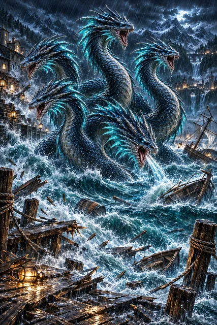
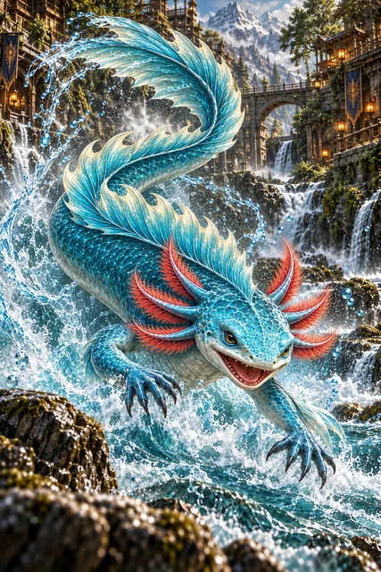
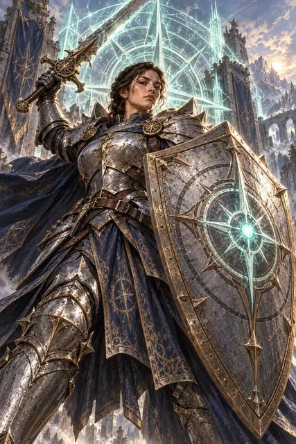
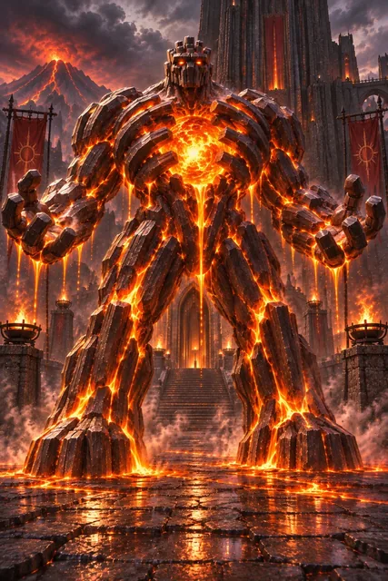

Mondo 01In avvicinamento
 In arrivo
In arrivo
Sigilli dell’Eclisse
Libera sei città dal Velo dell’Eclisse con carte fantasy che evolvono.
- Carte collezionabili
- Fantasy
- Strategia
- Android
- Presto suGoogle Play
- 78carte da collezionare
- 4forme per ogni carta
- 6città da liberare
- 42quartieri da esplorare
- 31combo tra carte
Il mondo
Il mondo
Il Drago dell’Eclisse ha steso il suo Velo su sei città. La Guardiana ti aspetta al Ponte: raduna le tue carte e liberale, una a una.
Sotto il Velo le città si sono spente e chi le abitava ha dimenticato l’alba. I guardiani ora combattono per il Drago. Tocca a te riportare la luce.
Sigilli dell’Eclisse è un gioco di carte fantasy da collezionare: prepari la vittoria prima dello scontro, scegliendo le carte e il loro ordine, poi la battaglia va da sola.
Cosa ti aspetta
Evoca e fai evolvere
Evoca nuove carte con le pietre di evocazione, in sei rarità da Comune a Leggendaria. Unisci un’altra copia della stessa carta e falla evolvere: a ogni forma cambia illustrazione, fino alla quarta.
Componi le squadre
Ogni carta ha un’abilità che scatta da sola in battaglia: colpi, veleni, scudi, cure e perfino carte che rialzano una squadra caduta. 31 combo tra carte precise e un bonus per le carte dello stesso regno.
Libera le città
Esplora 42 quartieri e affronta guardiani e boss: a ogni città liberata il Velo si dirada, fino alla porta del Drago.
Sfida l’Arena, abbatti i boss
Dal livello 30, ogni settimana sfida nell’Arena gli avversari vicini a te in classifica. Abbatti un Boss condiviso insieme agli altri giocatori entro un’ora: se cade, la sua carta va a chi ha fatto più danni.
Schermate
Tocca un’immagine per ingrandirla.


Carte che lasciano il segno
Eroi, bestie e draghi di sei regni. Ogni carta ha un ruolo, un’abilità e un’illustrazione tutta sua.

Idra delle Profondità 
Salamandra del Torrente 
Guardiana del Sigillo 
Fenice dell’Alba 
Golem di Basalto
Una carta, quattro forme
Unisci le copie e guarda la carta crescere: a ogni evoluzione cambia l’illustrazione. Qui la Viverna dei Cristalli, dalla prima forma alla quarta.

Forma 1 
Forma 2 
Forma 3 
Forma 4
Scheda
- Genere
- Carte collezionabili, Fantasy, Strategia
- Piattaforme
- Android
- Stato
- In arrivo
- Connessione
- Serve Internet: la partita è salvata sul server
- Acquisti
- Facoltativi, con denaro reale
- Sviluppatore
- NeoByte Studios
Dove trovarlo
- Presto suGoogle Play
Serve una connessione a Internet: la partita è salvata sul server e la ritrovi su ogni telefono con lo stesso account Google.
Nel gioco ci sono acquisti facoltativi con denaro reale, anche di oggetti casuali (le pietre di evocazione): le probabilità sono nella schermata delle evocazioni e le pietre si guadagnano anche giocando.
Documenti del gioco
Assistenza: support@neobytestudios.com